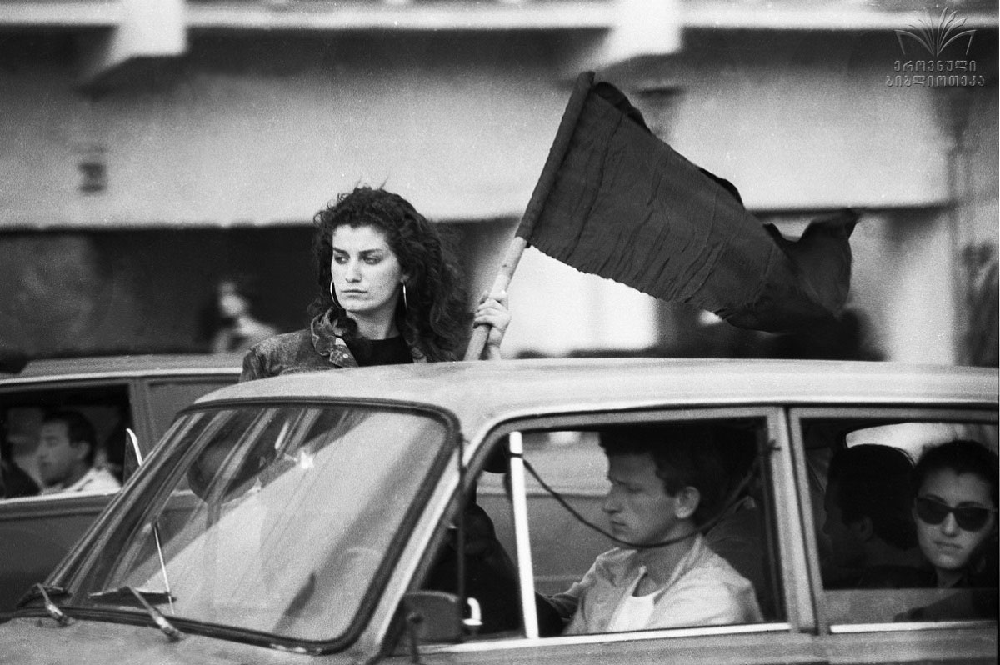

9აპრილის ტრაგედია — 1989 წლის 9 აპრილს, თბილისში მომხდარი სისხლიანი მოვლენები, რაც გამოიხატა საბჭოთა არმიის მიერ ანტისაბჭოთა, საქართველოს დამოუკიდებლობის მოთხოვნით მოწყობილი მშვიდობიანი დემონსტრაციის ძალისმიერ დარბევაში,
რის შედეგადაც დაიღუპა 21 და დაშავდა 427 ადამიანი.

რა დააშავა რუსეთმა?
ამ კითხვის დასმა როგორ შეიძლება!?
1772-ვახტანგ VI-ის ღალატი
1770-ღალატი ასპინძისომში
1787-გეორგიევსკის ტრაქტატის დარღვევა
1801- საქართველოს ანექსია
1804-მთიულების აჯანყების სასტიკად ჩახშობა
1811-ავტოკეფალიის გაუქმება
1887-დიმიტრი ყიფისნის მკვლელობა
1921-საქართველოს ანექსია
1923-დავით და კონსტანტინე მხეიძეების ცხედრების ამოთრა და ქუჩა-ქუჩა თრევა